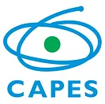
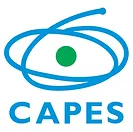

Animal Movement Analysis Short Course
III BrazilMove 2024
Univeridade Federal de Mato Grosso do Sul - UFMS
May 20-24, 2024

 
 
Dr. Eliezer (Elie) Gurarie | Dr. Nicole (Nicki) Barbour
Department of Environmental Biology
State University of New
York, College of Environmental Science and Forestry (SUNY-ESF)
Syracuse, NY 13210, USA
With assistance of:
Dr. Gustavo
Oliveira-Santos and Dr. Aline
Giroux (UFMGS)
and Dr. James
Forester (University of Minnesota)
Overview
Goals
This workshop is dedicated to developing skills in animal movement analysis, with an aim to start with foundations and build to useful and original inference. We will learn about the properties of movement data, how to load, explore, visualize, and manipulate movement data. We will learn the properties and parameters of some fundamental discrete and continuous time movement models, and how to estimate those models. We will cover tools for segmentation, behavioral analisys, and home ranging. We will relate movements to spatial data and environmental covariates.
This is a hands-on course, where every day students will be expected to perform independent or group work on original problems, culminating in a final presentation of the progress made.
What to bring
Bring data if you have some! And some interesting ecological or behavioral questions you are interested in exploring.
If you don’t have data that feels relevant, you can work with other participants on an in-class project.
We will be using R, which we assume participants have experience using. Be sure R is installed, as well as (most likely) Rstudio, preferably recent versions of both.
We will also use a bunch of useful packages which we can install and load as needed.
Bring enthusiasm!
Course Materials
The course will mix lectures on concepts, theory and tools with practical labs using R. We will plan on covering roughly 2 topics per day in a morning (8:00-11:30 am) and afternoon (1:30-5:00 pm) session, with a mix of lecture and R labs for each. We will also set aside time every day for participants to apply some of the techniques to their own data (alone or in groups) in a workshop-type atmosphere. We will culminate with some brief presentations of some of the analysis performed by individuals / groups.
Links to all the materials (lecture and labs) in the course are posted below.
1. Overview
Present: about yourself Please come prepared with 2-3 slides to introduce yourself, your study system, your ecological questions, and a brief description of your data.
2. Processing Movement Data
-
- data here: Elk_GPS_data.csv (right-click to download), also available on Movebank here. (With a huge acknowledgement to Dr. Mark Hebblewhite and the enormous amount of work and research that went into the Ya Ha Tinda).
Guest Lecture from Sarah Davidson - from Movebank
4. Complex Numbers (are simple)
- Lecture/Lab
- See also book chapter here.
5. Statistical Summaries
Exercise: Generate a summary table and relevant visualizations for your data.
6. Movement Models
See also these chapters on Discrete and Continuous movement models.
7. Segmentation
- Lecture
- Lab - Lavielle Segmentation (R code)
- Lab - First Passage Time (R code)
- Lab - Multi-State Random Walk (R code)
Exercise: Apply a movement model or segmentation method to your data.
8. Home Range Analyses
9. Special Topics
Final Presentations
Please come prepared to present (~10 min) on a small analysis of your data (Include 1-2 slides each introducing your study system and research question(s), describing your methods and analyses, your results, and the implications/discussion of your findings